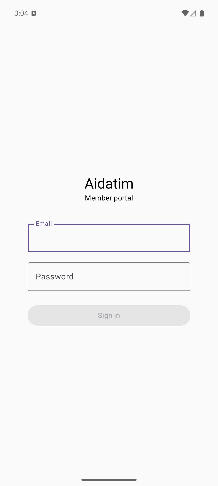
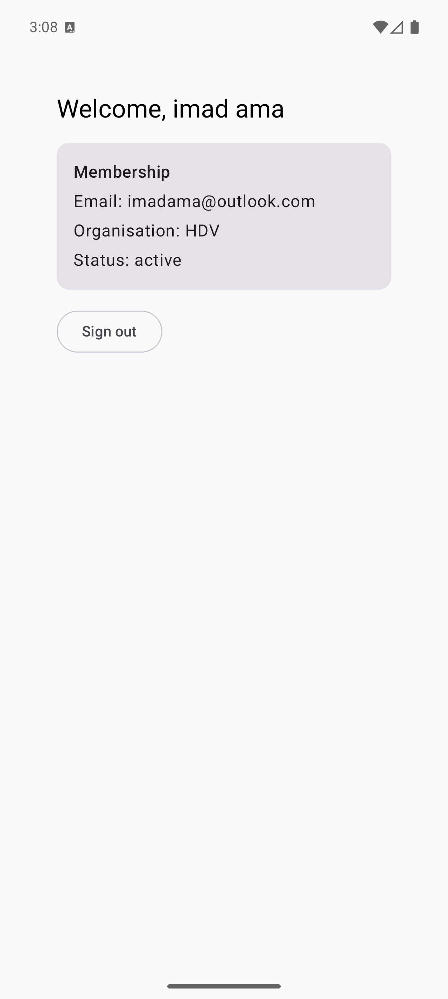
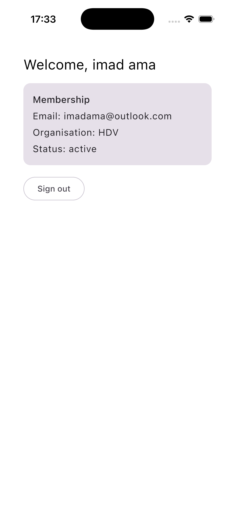
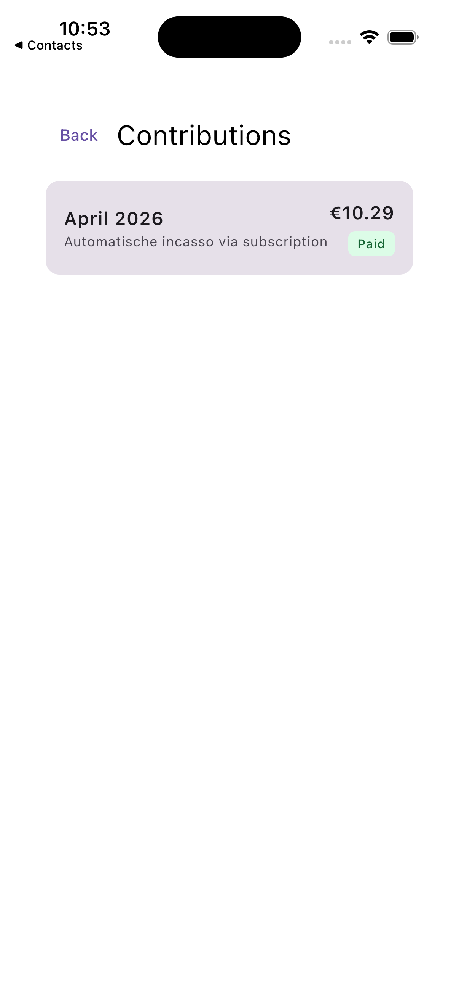

✅ Eerste werkende slice — US-01 Login (18 jun 2026). De Compose Multiplatform-app is opgezet en de volledige login-keten werkt end-to-end op zowel de Android-emulator als de iOS-simulator: inloggen → token van de bestaande backend (POST /api/auth/token) → Dashboard met echte ledendata (naam, organisatie, status). Eén gedeelde codebase, draaiend op beide platforms.
Architectuur staat: gelaagd (core/network → data → feature) met Ktor (HTTP), Koin (DI), MVVM (ViewModel + StateFlow), Compose Navigation en Engelstalige UI. Backend-token-endpoint is live met 3 feature-tests.
✅ Tweede slice — US-04 Contributie-overzicht (19 jun 2026). Geauthenticeerde call naar GET /api/member/contribution-history (Bearer-token + X-Organisation-Subdomain), met lijst, status-chips (Paid/Open/Failed/Processing), en loading-/error-/lege-staat. Werkt op beide platforms — bewijst dat de architectuur ook voor een tweede feature schaalt.




Bewijs: dezelfde codebase draaiend op de Android-emulator (Pixel 9 Pro) én de iOS-simulator (iPhone 17, iOS 26.5), ingelogd tegen api.aidatim.nl.
De opdracht vraagt .NET MAUI — jouw docent staat KMP/CMP toe. We bouwen dus een cross-platform mobiele app (Android + iOS) in Compose Multiplatform. Overal waar de opdracht ".NET MAUI" zegt, lees je voor jou "Compose Multiplatform"; waar ".NET Web API" staat, lees je "de bestaande Laravel-backend".
Eigen .NET-backend bouwen vervalt. De opdracht zegt letterlijk: "Als de applicatie volledig kan aansluiten op een bestaande backend en/of persistentie vervalt deze voorwaarde." Je hebt al een complete, draaiende Laravel-backend (api.aidatim.nl) met een volledige /api/member/-laag. Wél opnemen in je voorstel + bespreken met docent (dat is een expliciete eis).
Het PoC = een native Ledenportaal-app. Leden gebruiken het portaal nu via de mobiele browser. Een native app is een echte procesverbetering: biometrische login, offline inzage en sensoren. Dat sluit precies aan op LU3 ("integreren in een bestaand systeem").
Beslispunt — authenticatie. De backend gebruikt nu Sanctum cookie-auth (gemaakt voor de web-SPA). Een native app werkt veel schoner met token-auth (Bearer). Sanctum ondersteunt dit, maar je moet een kleine token-login-endpoint toevoegen (personal access tokens). Aanbeveling: token-auth toevoegen. Dit is ook mooi materiaal voor het hoofdstuk "authenticatie & autorisatie" in je ontwerpdocument.
Bestaande assets die het PoC mogelijk maken — dit is jouw "bestaande systeem" om in te integreren.
api.aidatim.nl, multi-tenant, Stripe/SEPA, webhooks. Dit is de backend waar de app op aansluit./api/member/: profile, contribution, contribution-history, subscription, sepa/setup, contribution-pay. Alles wat de app nodig heeft bestaat al./mobile-module en GitHub Actions als CI/CD-omgeving.De technische realisatie. Nieuwe KMP-projectstructuur (mei 2026), MVVM, Ktor naar de bestaande API.
/mobile; beide targets compileren, Android-APK draait.X-Organisation-Subdomain). Resterende member-endpoints volgen per story.LoginViewModel + StateFlow + Repository boven de Ktor-client. Basis voor het MVVM-sequencediagram.AppModule): HttpClient, API, repository en ViewModels.Schermen (gebaseerd op user stories)
Minimale wijziging om de native app schoon te laten aansluiten.
POST /api/auth/token live: neemt email+wachtwoord aan en geeft een Sanctum-token + ledendata terug. Gedekt door 3 feature-tests.api.aidatim.nl puur via Bearer (zonder cookies) vanaf de emulator.Alle eisen uit de opdracht. Herleidbaar naar de realisatie.
Minimaal 3 unit + 3 UI/device tests. LU3 vraagt ook regressie/integratie/systeem qua strekking.
kotlin.test.Elke eis 1-op-1 uit de opdracht, met huidige status.
| Opleverdeel (opdracht) | Status | Opmerking |
|---|---|---|
| Werkende, functioneel geteste cross-platform app (KMP/CMP i.p.v. MAUI) | Deels | Login-slice werkt op Android, compileert op iOS |
| Eigen backend + persistentie (vervalt bij bestaande backend) | Vervalt ✓ | Bestaande Laravel-backend; opnemen in voorstel |
| Meest recente technologie toegepast | Aanwezig | Nieuwe KMP-structuur, laatste Compose MP, Ktor |
| Broncode & GUI Engelstalig | Deels | Toegepast vanaf start; bewaken |
| Ontwerpdoc — functionaliteit-samenvatting | Te doen | |
| Ontwerpdoc — user stories | Deels | Vaststellen met verantwoordelijke |
| Ontwerpdoc — use case diagram | Te doen | |
| Ontwerpdoc — wireframes | Deels | Web-portaal als referentie |
| Ontwerpdoc — Web API-documentatie + request-voorbeelden | Deels | Endpoints bestaan; uitschrijven |
| Ontwerpdoc — authenticatie & autorisatie | Deels | Sanctum + rollen bekend |
| Ontwerpdoc — package diagram + architectuur | Te doen | |
| Ontwerpdoc — deployment diagram | Te doen | |
| Ontwerpdoc — klassendiagrammen eigen klassen | Te doen | |
| Ontwerpdoc — sequence MVVM (min. 1) | Te doen | Verplicht |
| Ontwerpdoc — sequence app↔backend (min. 1) | Te doen | Verplicht |
| ≥ 3 zinvolle unit tests | Te doen | |
| ≥ 3 zinvolle UI/device tests | Te doen | |
| Acceptatietest(en) o.b.v. DoD | Te doen | |
| Projectbestand met alle code & assets | Te doen | Repo dekt dit |
| Aantoonbaar ingerichte werkomgeving (CI/CD) | Deels | GitHub Actions inrichten |
| Installatie- & gebruiksinstructie | Te doen | |
| DoD-checklist | Te doen | |
| Demovideo | Te doen | Laatste stap |